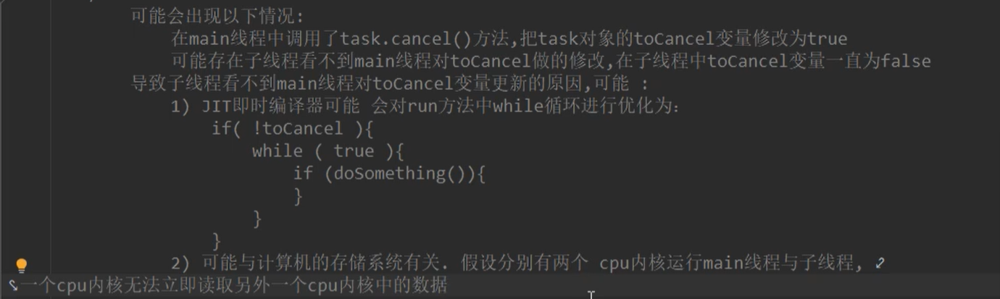

优势：
1、提高系统的吞吐率（Throughout），多线程编程可以使一个进程有多个并发（concurrent）的操作。
2、提高系统响应性（Responsiveness），缩短用户的等待时间。
3、充分利用多核（Multicore）处理器资源，通过多线程可以 充分利用CPU资源。
存在的问题与风险：
1、线程安全问题（Thread safe），多线程共享数据时，如果没有采取正确的并发访问控制措施，就可能会产生数据一致性问题，如读取脏数据（过期的数据），如丢失数据更新。
2、线程活性问题，由于程序自身的缺陷或者资源的稀缺性导致线程一直处于非RUNNABLE状态，这就是线程活性问题。
常见的活性问题：
1、死锁（DeadLock）；
2、锁死（Lockout）；类似于睡美人故事中，王子挂了。
3、活锁（LiveLock）；
4、饥饿（Starvation）；
3、上下文切换（Context Switch）：处理器从执行一个线程切换到执行另外一个线程
4、可靠性。可能会有一个线程导致JVM意外终止，其他的线程也无法执行。
线程安全问题：
线程安全主要是指线程对同一个对象的实例变量进行操作时，会出现值被更改，值不同步的情况。
线程安全性问题表现为三个方面：原子性，可见性和有序性
1、原子性
原子（Atomic）就是不可分割的意思 。
原子操作的不可分割有两层含义：
1>访问（读，写）某个共享变量的操作从其他线程来看，该操作要么已经执行完毕，要么尚未发生，即其他线程看不到当前操作的执行结果。
2>访问同一组变量的原子操作是不能交错的；
例如：取款操作，要么用户操作成功拿到钱，要么没拿到钱， 相当于取款操作没有发生。
java有两种方式实现原子性：一种是使用锁，另一种是使用处理器的CAS指令。
在java中提供了一个线程安全的AtomicInteger类，保证了操作的原子性。
例如：
class MyInt(){
int num;
public int getNum(){
return num++;
}
}
/*
* 两个线程读取的数据有重复的，因为一个线程调用时，++操作还没来得及进行自增，另一个线程又执行了。
*/
/*
使用AtomicInteger类，可以保证操作的原子性。
*/
class MyInt(){
AtomicInteger num=new AtomicInteger();
public int getNum(){
return num.getAndIncrement();
}
}
2、可见性
在多线程环境中，一个线程对某个共享变量进行更新后，后续其他线程可能无法立即读取到这个更新后的结果。
如果一个线程对共享变量更新后，后续访问该变量的其他线程可以读取到更新的结果，称这个线程对共享变量的更新对其他变量可见，否则 称这个线程对共享变量的更新对其他线程不可见。

3、有序性
有序性（Ordering）是指在什么情况下一个处理器上运行的一个线程所执行的 内存访问操作在另一个处理器运行的其他线程来看是乱序的（Out of Order）。
乱序是指内存访问操作的顺序看起来发生了变化 。
重排序：
在多核处理器的环境下，编写的顺序结构，这种操作执行的顺序可能是没有保障的：
1、编译器可能会改变两个操作的先后顺序；
2、处理器也可能不会按照目标代码的执行顺序执行；
这种一个处理器上执行的多个操作，在其他处理器来看它的顺序与目标代码指定的顺序可能不一样，这种现象称为重排序。
重排序是对内存访问有序操作的一种优化，可以在不影响单线程程序正确的情况下提升程序的性能。但是，可能 会对多线程程序的正确性产生影响，即可能导致线程安全问题。
重排序与可见性问题类似，不是必然出现的。
与内存操作顺序有关的几个概念：
1、源代码顺序，就是源码中指定的内存访问顺序；
2、程序顺序，处理器上运行的目标代码所指定的内存访问顺序；
3、执行顺序， 内存访问操作在处理器上的实际执行顺序
4、感知顺序，给定处理器所感知到的该处理器以及其他处理器的内存访问操作的顺序
重排序分为：
1、指令重排序:
主要是JIT编译器，处理器引起的，指程序顺序与执行顺序不一致。
2、存储子系统重排序：
是由高速缓存，写缓冲器引起的。感知顺序和执行顺序不一致。
指令重排序：
在源码顺序与程序顺序不一致，或者 程序顺序与执行顺序不一致的情况下，我们就说发生了指令重排序。
指令重排序是一种动作，确实对指令的顺序做了调整，重排序的对象是指令。指令重排不会对单线程程序的结果正确性产生影响，可能导致多线程程序出现非预期的结果。
javac编译器一般不会执行指令重排序，而JIT编译器可能执行指令重排序。
处理器也可能执行指令重排序，使得执行顺序与程序顺序不一致。
存储子系统重排序：
存储子系统是指写缓冲器与高速缓存；
高速缓存是CPU为了匹配与主内存处理速度不匹配而设计的一个高速缓存。
写缓冲器（Store buffer ，Write buffer）用来提高写高速缓存操作的效率。
即使处理器严格按照程序顺序执行两个内存访问操作，在存储子系统的作用下，其他处理器对这两个操作的感知顺序与程序顺序也可能 不一致。即这两个操作的顺序看起来像是发生了变化，这种现象称为存储子系统重排序。
存储子系统重排序并没真正的对指令执行的顺序进行调整，而是造成一种指令执行顺序被调整的假象。
存储子系统重排序是内存操作的结果。
从处理器角度来看，读内存就是从指定的RAM地址中加载数据到寄存器，称为Load操作；写内存就是把数据存储到指定的地址表示的RAM存储单元中，称为Store操作。内存重排序有一下四种可能：
1、LoadLoad重排序，一个处理器先后执行两个读操作L1和L2，其他处理器对这两个内存操作的感知顺序可能是L2->L1；
2、StoreStore重排序，一个处理器先后执行两个写操作W1和W2，其他处理器对两个内存操作的感知顺序可能是W2->W1;
3、LoadStore重排序 ，一个处理器先执行读内存操作L1再执行写内存操作W1，其他处理器对这两个内存操作的感知顺序可能是W2->L1;
4、Store重排序，一个处理器先执行写内存操作W1再执行读内存操作L2，其他处理器对这两个内存操作的感知顺序可能是L2->W1。
内存重排序可能导致线程安全问题。
貌似串行语义：
JIT编译器，处理器，存储子系统是按照一定的规则对指令，内存操作的结果进行重排序，给单线程程序造成一种假象--->指令是按照源码顺序执行的，这种假象称为貌似串行语义。并不能保证多线程环境程序的正确性。
数据依赖关系：如果两个操作（指令）访问同一个变量，且其中一个操作（指令）为写操作，那么这两个操作之间就存在数据依赖关系。
如： x=1；y=x+1；后一条语句的操作数包含前一条语句的执行结果；
y=x；x=1；先读取x变量的值，再更新x变量的值。
x=1；x=2；两条语句同时对一个变量进行写操作。
为了保证貌似串行语义，有数据依赖关系的语句不会被重排序，只有不存在数据依赖关系的语句才会被重排序。
如果不存在数据依赖关系则可能重排序。
如：
double price=45.8；
int quantity=10；
double sum=price*quantity；
控制依赖关系：一条语句（指令）的执行结果会决定另一条语句（指令）能否被执行，这两条依据（指令）就存在控制依赖关系。
控制依赖关系的语句允许重排。
保证内存访问的顺序性：
可以使用 volatile关键字，synchronized关键字实现有序性（感知顺序和源码顺序一致）。